Our WhatsApp group
The easiest way to meet the community, ask a question or hear about the next meetup.
Join WhatsAppThree volcanoes, Maya villages along the shore, and a strong group of people who pay, teach and welcome with Bitcoin.
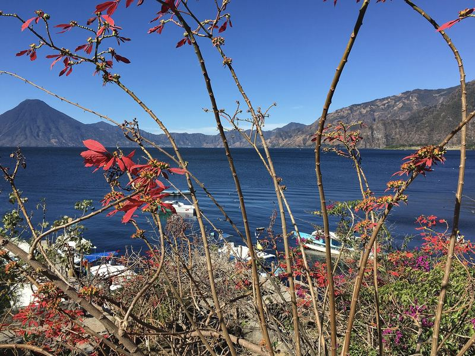

Lake Atitlán fills a volcanic basin in the highlands of Sololá, Guatemala. The volcanoes Atitlán, Tolimán and San Pedro rise along its south shore.
Maya villages sit along the water. Kaqchikel and Tz’utujil are the main Maya languages spoken around the lake, and every village has its own character.
Panajachel is the busiest gateway. From its docks, public boats cross to San Marcos La Laguna, San Pedro La Laguna, Santiago Atitlán and other villages.
Village is assigned from each place’s map position, so it is approximate.


117 places around Lake Atitlán have been listed on BTC Map over the years. About 50 of them take bitcoin actively today, from cafes and hotels to pharmacies and boat taxis.
Active count: Eliazar, interviews of January and May 2026. Listed places: BTC Map. How the count changed since 2022
117 places listed on BTC Map / OpenStreetMap, data of 2026-10-19.
Always check with the merchant: payment options and opening hours change. Each card shows the date of the last survey on OpenStreetMap, where one is listed.
A Bitcoin boat, a boat taxi and three tuk tuks are listed in Panajachel. Contact details are copied from the listings. Ask about the fare before you go.
Boat
Boat
Tuk tuk
Tuk tuk
Tuk tuk


The easiest way to meet the community, ask a question or hear about the next meetup.
Join WhatsAppOnce a month we meet in Panajachel to talk Bitcoin, swap sats and drink local coffee.
Since 2023 we teach Bitcoin courses with a diploma, from primary schools to universities. Students make their first Lightning payments in class.
So far: Centro Educativo Josué, LTK School, Colegio Ebenezer, AMA School, INEDSC in Santa Catarina Palopó, Ciencias Comerciales in Sololá (200 students per course) and UVG Altiplano.
Bitcoin Lago was founded in 2021 by Patrick Melder together with friends and supporters. Eliazar leads the work on the ground, with volunteers, teachers and merchants around the lake.
Photo and short bio of Eliazar to be added.
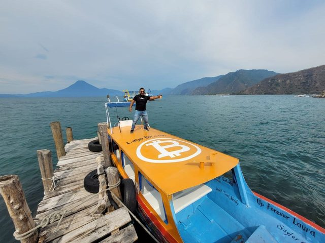
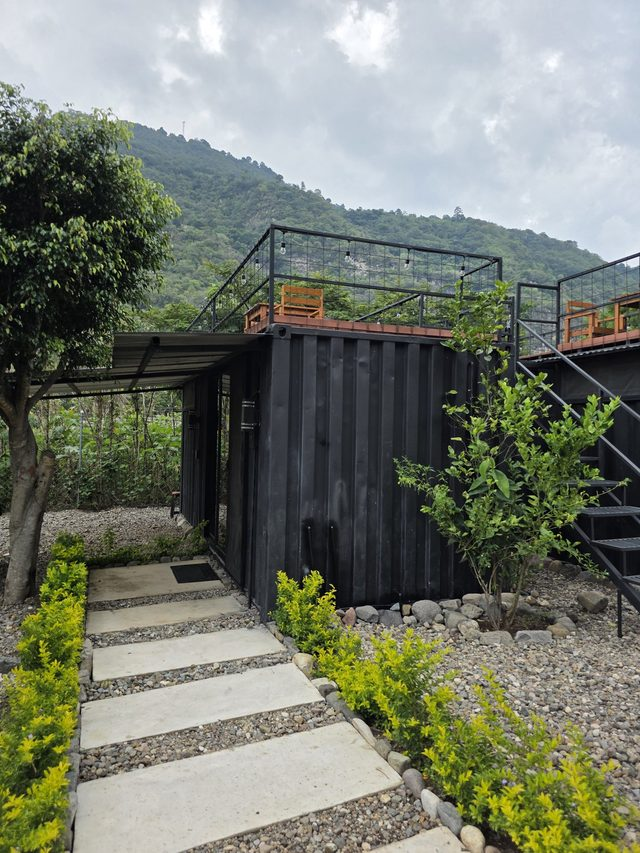
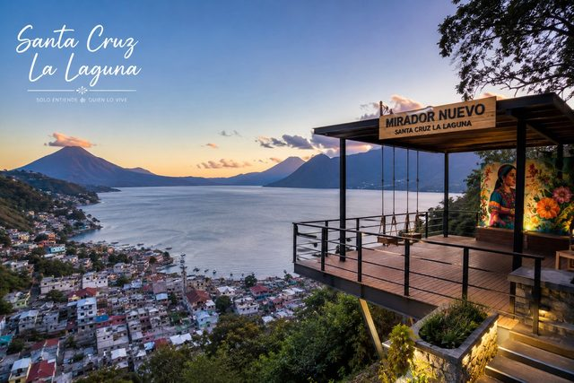
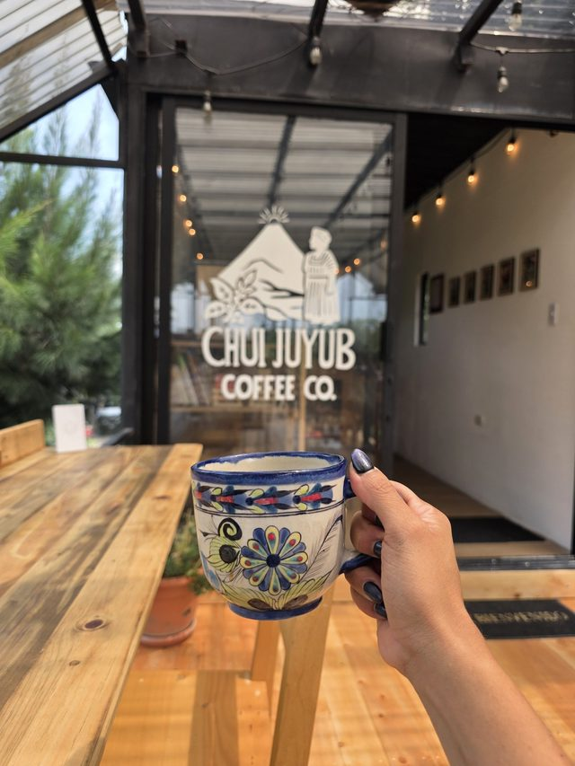
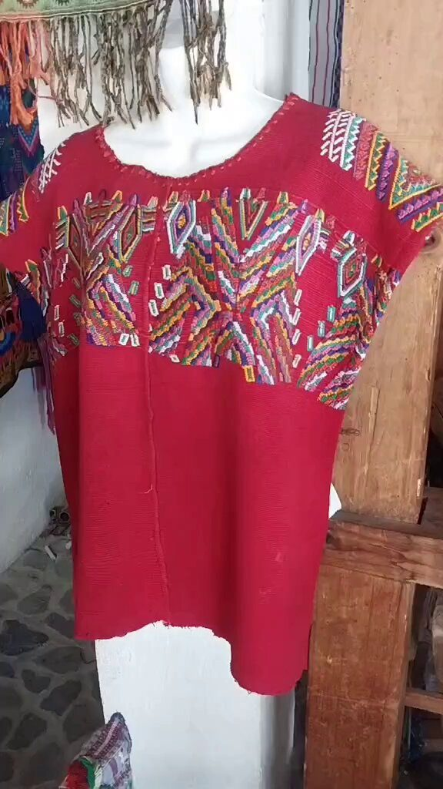
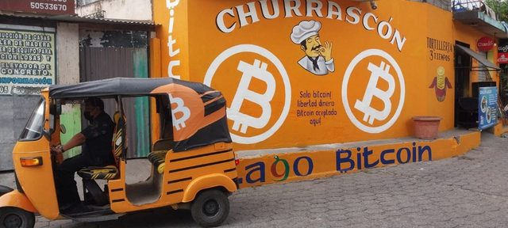
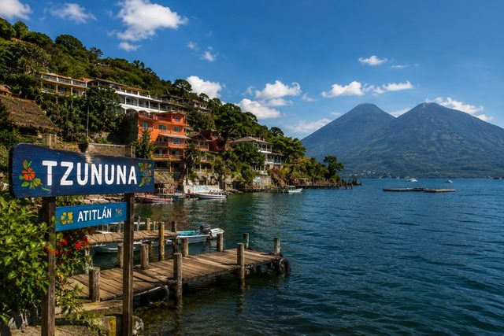
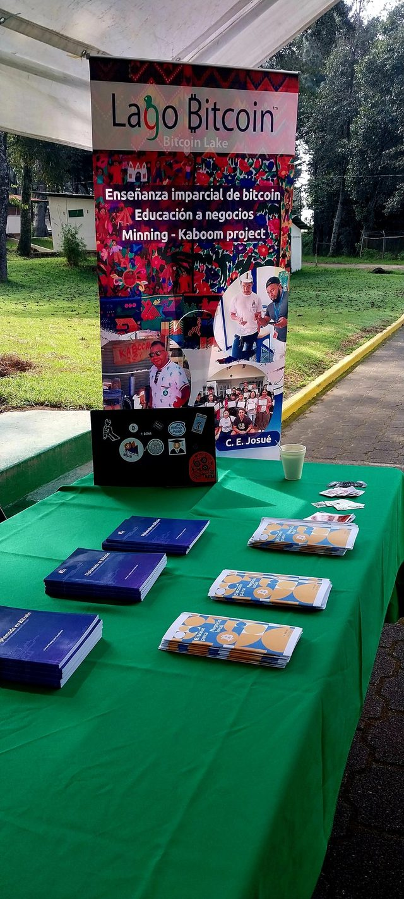
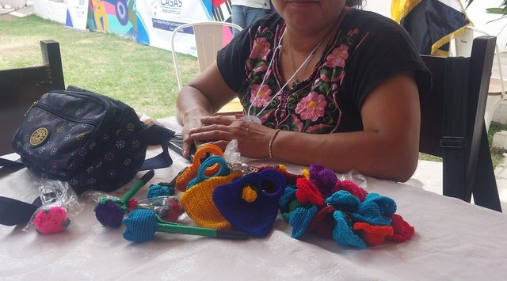
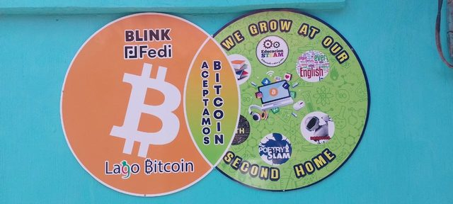
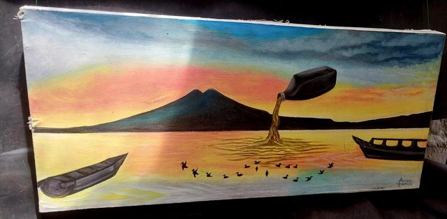


Tours, stays, transport, a soft landing for newcomers, team retreats. We know the people who do it best around the lake.
Tell us what you need and we arrange it with people we know around the lake. You pay in bitcoin, and every local business we bring in learns to accept it. That is how the community grows.
There is a group of expats on the lake and we serve them. We help anyone integrate into the Bitcoin community here, whether you are visiting, staying for a season or settling.
Talk to usBitcoin Lago began in Panajachel in 2021. It was founded by Patrick Melder with friends and supporters, out of years of volunteering at Centro Educativo Josué. Eliazar, our local leader, started by visiting businesses one by one.
One of my main goals with Bitcoin Lago is simply to teach about Bitcoin to all the communities around Lake Atitlán, from 10-year-old children to 100-year-old adults. One of my greatest dreams is for every town around the lake to learn about Bitcoin and use it, and one day to open a Bitcoin center here.
Bitcoin Lago starts in Panajachel. Eliazar visits businesses one by one, and the first merchants accept bitcoin.
Kaboom: used cooking oil runs a generator that mines bitcoin. The lake team travels to Adopting Bitcoin in El Salvador. Source: 1 2
Bitcoin enters the classroom: diploma courses at Centro Educativo Josué and a first course for teachers. The Bitcoin Beach team visits and rides the Bitcoin boat. Tuk tuks start taking bitcoin. Source: 1 2 3
Courses at LTK School, Colegio Ebenezer, AMA School and INEDSC in Santa Catarina Palopó. Students open their first Fedi community. Wallets and books arrive from the Swiss Bitcoin community. Talks at UVG in Sololá. Source: 1 2 3
A Bitcoin shelf opens at the Panajachel public library. Our first university course, at UVG Altiplano. 200 students at Ciencias Comerciales in Sololá. Classes in the local Maya language in San Antonio Palopó, and bitcoin reaches Santiago Atitlán. Source: 1 2 3 4
The first graduation of the year is recorded on the Bitcoin blockchain. 200 more students in Sololá, a Lightning workshop for a women's group, a container hotel and Chui Juyub coffee join, and Atitlán Bitcoin Tours launches. Source: 1 2 3 4
45 moments from 2022 to today, with photos and sources.
Interviews, documentaries and talks since 2022, each with a written summary.
Bitcoin offers an economic freedom that is not found in current fiat currencies or other cryptocurrencies.
ReadWe don't have any major endowment or donations to do what we are doing.
Read


We're trying to create a circular bitcoin economy like they did in El Zonte, but with a twist: we're using formal school training versus community training.
Read


Bitcoin evangelism is no different than Christian evangelism.
Read


More and more visitors are asking us about how they can spend bitcoin in Lake Atitlán, and I'm excited to share that our region has truly become a part of the global bitcoin movement.
ReadI have seen firsthand that this project has successfully onboarded more than 60 merchants, of whom 90% are unbanked and solely accept cash and bitcoin.
ReadNo todos necesitan entender cómo funcionan las billeteras HD, o los beneficios de taproot.
Read

The goal of this proof-of-concept is to capture the wasted fuel and convert the biogas into electricity/Bitcoin.
ReadPatrick Melder is a Bitcoin missionary and a Christian one, in Guatemala.
ReadAs presented at Adopting Bitcoin 2023, the team described three goals: education, adoption and mining.
Channel: Adopting Bitcoin
YouTube loads only after you press play.
Organisations that work with Bitcoin Lago and support Bitcoin at the lake.
A global federation that connects and supports local Bitcoin circular economies like ours.
Bitcoin-only company in Guatemala: buy bitcoin straight to your own wallet, hardware wallets, advice and free meetups.
A Bitcoin-native district and community in Próspera, Roatán, Honduras.
A festival of Bitcoin films and culture, born in Warsaw, with screenings around the world.
A Lightning wallet for everyday bitcoin payments, formerly the Bitcoin Beach Wallet.


.jpg){kind=link}